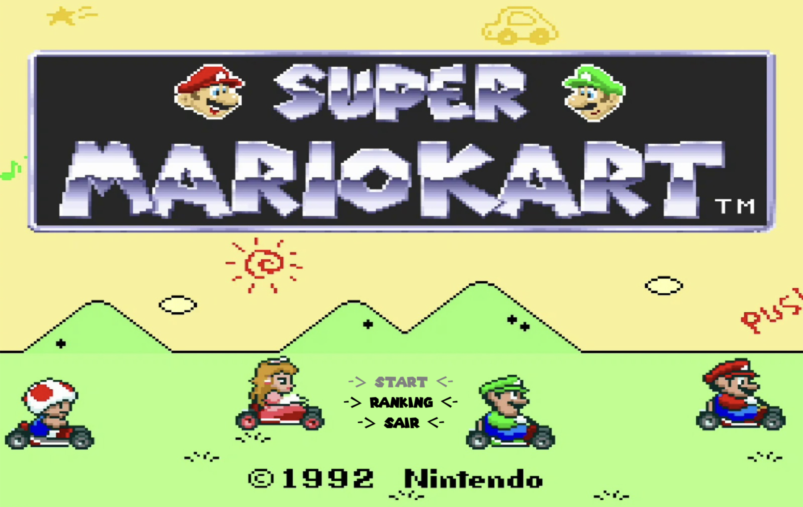
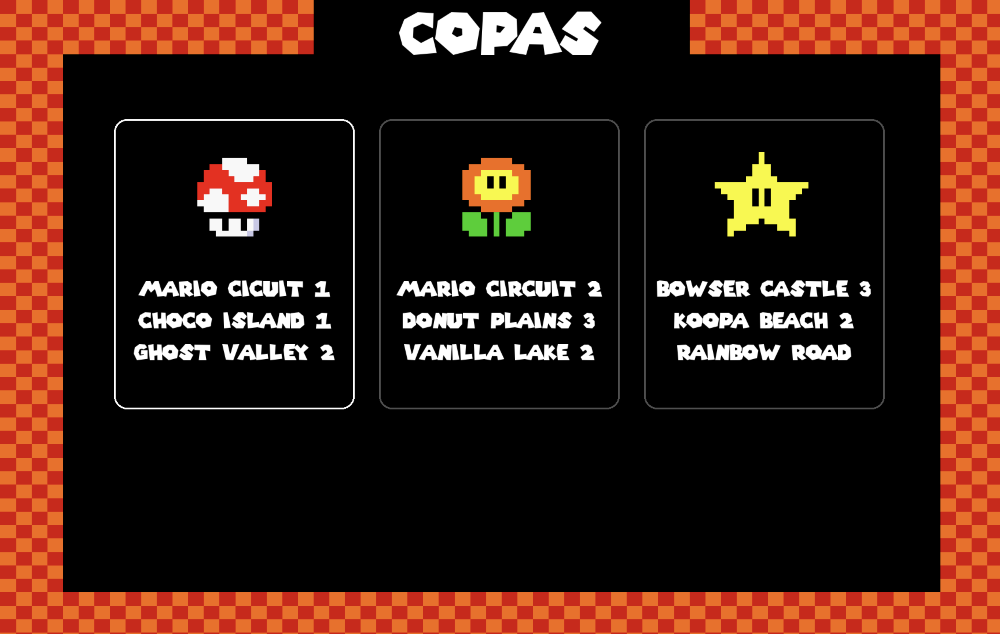
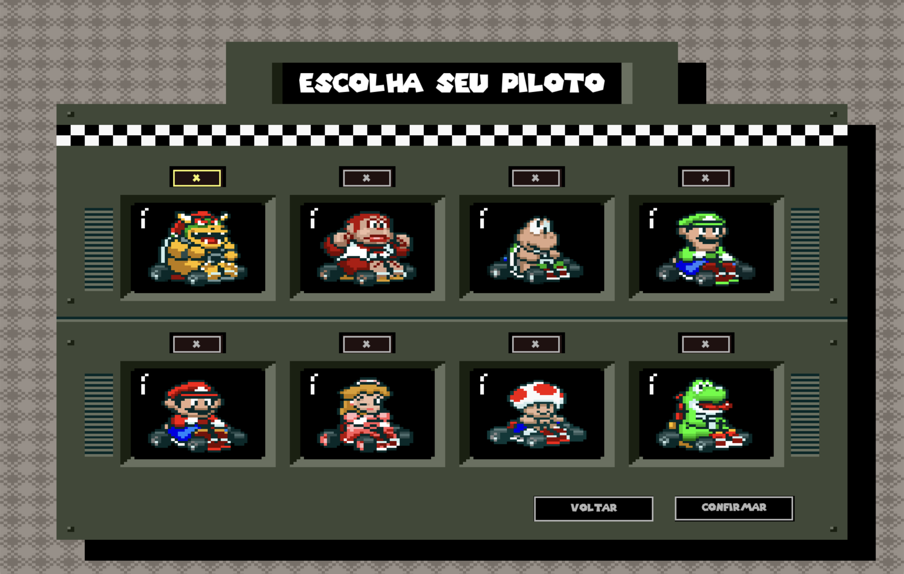
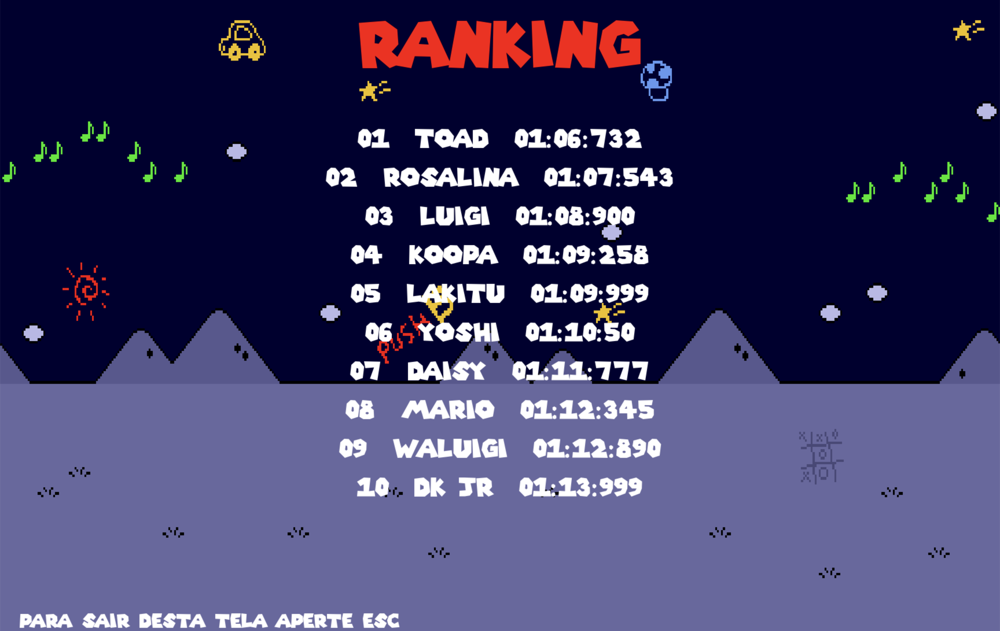

Descrição do Jogo
Corrida arcade em 2d
O jogador passa pelas telas de menu, escolha da copa, personagem, nome, resumo e corrida. Durante a corrida, o objetivo é completar o trajeto em primeiro lugar no menor tempo possível.
O jogo tem trilha sonora, efeitos de seleção, coutdown antes da largada, jogabilidade pelo teclado, drift e itens. Os melhores tempos são armazenados no ranking local.
Membros do grupo
- Rafael Duarte
- Pedro Wu




Log de Desenvolvimento
Resumo baseado nos commits
-
Início do projeto, ajuste do README, criação da classe principal e carregamento dos assets de mapas e personagens.
-
Primeiros testes da janela do jogo e inclusao do storyboard.
-
Construção da tela inicial com texto, navegação pelo teclado, destaque da opção selecionada e botão de sair.
-
Implementação e finalização da tela de ranking.
-
Início da tela de escolha de copa.
-
Ajustes de tamanhos, fontes, sons, ícones das copas, cards de seleção e tela para inserir nome.
-
Criação da tela de personagens, salvamento do tempo em arquivo, animações, tela de informações, countdown e tela de corrida.
-
Ajustes no fluxo antes da corrida, música, mouse oculto, movimento do personagem e novos assets espelhados.
Download
Pacote zip do jogo
Adicionar link do zipInstruções para executar
python -m pip install pygame
python jogo.py- W Acelera
- S Freia
- A / D Viram o kart
- Espaço Ativa o drift
- Q Usa o item disponível
Vídeo curto
Apresentação do jogo
Vídeo curto apresentando o jogo funcionando.